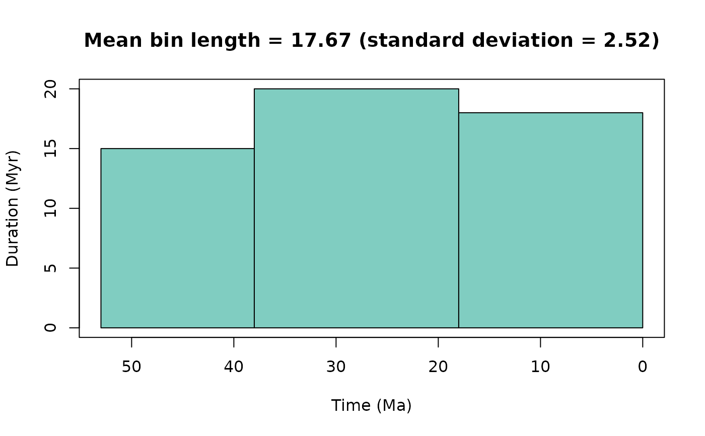
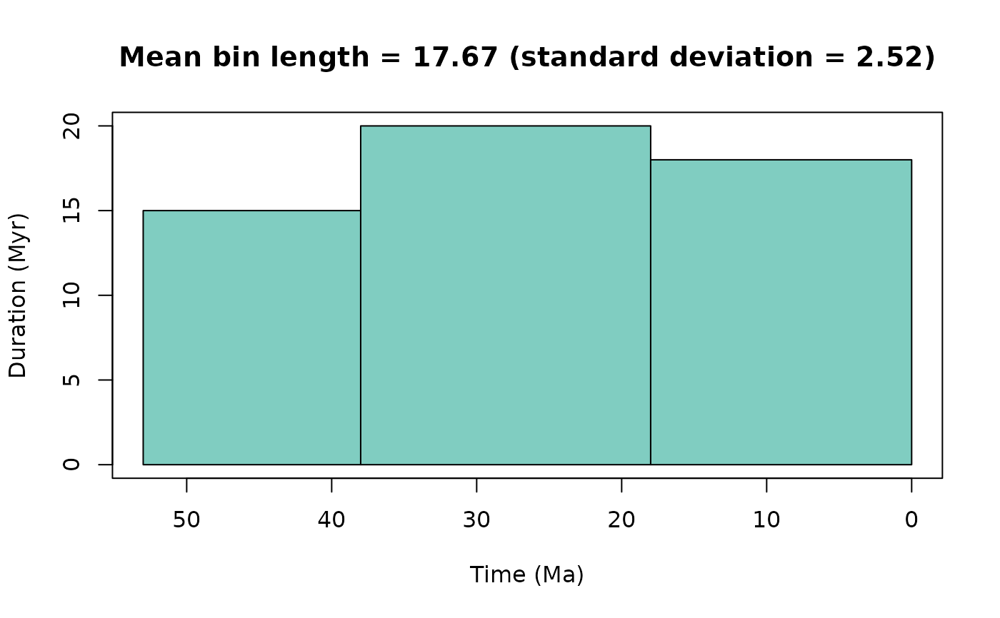

A function to generate time bins for a given study interval and geological
timescale. This function is flexible in that either stage-level or higher
stratigraphic-level (e.g. period) time bins can be called, valid timescales
from Macrostrat can be
used, or a data.frame of a geological timescale can be provided. In
addition, near equal-length time bins can be generated by grouping
intervals together. For example, for a target bin size of 10 Myr, the
function will generate bins that have a mean bin length close to
10 Myr. Similarly, for a specified number of bins (n_bins), the function
will generate this number of bins with with a bin duration as uniform as
possible. However, users may also want to consider grouping stages based on
other reasoning e.g. availability of outcrop (see Dean et al. 2020).
Usage
time_bins(
interval = "Phanerozoic",
rank = "stage",
size = NULL,
n_bins = NULL,
assign = NULL,
scale = "GTS2020",
plot = FALSE
)Arguments
- interval
character or numeric. Interval name available inGTS2020orGTS2012. If a single interval name is provided, this interval is returned. If two interval names are provided, these intervals and those existing between are returned. If a single numeric age is provided, the interval that covers this age is returned. If two numeric ages are provided, the intervals occurring in the range of these ages are returned. Defaults to "Phanerozoic". This argument is ignored ifscaleis not "GTS2020" or "GTS2012".- rank
character. Which stratigraphic rank is desired? Choose from: "stage", "epoch", "period", "era", and "eon". This argument is ignored ifscaleis not "GTS2020" or "GTS2012".- size
numeric. If equal-length time bins are desired, specify the length in millions of years (Myr) of the time bins desired.- n_bins
numeric. For equal-length time bins, a fixed number of time bins can be specified instead of a binsize. This argument will be ignored ifsizeis specified.- assign
numeric. A numeric vector of age estimates to use to assign to requested bins. If assign is specified, a numeric vector is returned of the midpoint age of the specified bins. Note this is the simplified approach of assignment inpalaeoverseincluded for data with 'known' point-age estimates. For a wider range of binning methods, seepalaeoverse::bin_time().- scale
characterordata.frame. Specify the desired geological timescale to be used: "GTS2020" (default), "GTS2012", a valid timescale from Macrostrat, or user-inputdata.frame. If adata.frameis provided, it must contain at least the following named columns: "interval_name", "max_ma", and "min_ma". As such, age data should be provided in Ma.- plot
logical. Should a plot of time bins be generated?
Value
A data.frame of time bins for the specified intervals or a
list with a data.frame of time bins and a named numeric
vector (bin number) of binned age estimates (midpoint of specified bins)
if assign is specified. By default, the time bins data.frame
contains the following columns: bin, interval_name, rank, max_ma, mid_ma,
min_ma, duration_myr, abbr (interval abbreviation), colour and font
(colour). If size or n_bins is specified, the time bins
data.frame contains the following columns: bin, max_ma, mid_ma,
min_ma, duration_myr, grouping_rank, intervals, colour and font.
Details
This function uses either the Geological Time Scale 2020,
Geological Time Scale 2012, a valid timescale from
Macrostrat, or a
user-input data.frame (see scale argument) to generate time bins.
Note, timescales from
Macrostrat tend to
contain the most up-to-date information (e.g. the Geological Time Scale).
Additional information on included Geological Time Scales and source can
be accessed via:
Available interval names are accessible via the interval_name column
in GTS2012 and GTS2020. Data of the Geological Timescale 2020 and
2012 were compiled by Lewis A. Jones (2022-07-02).
References
Dean, C.D., Chiarenza, A.A. and Maidment, S.C., 2020. Formation binning: a new method for increased temporal resolution in regional studies, applied to the Late Cretaceous dinosaur fossil record of North America. Palaeontology, 63(6), 881-901. doi:10.1111/pala.12492 .
Examples
#Using numeric age
ex1 <- time_bins(interval = 10, plot = TRUE)
 #Using numeric age range
ex2 <- time_bins(interval = c(50, 100), plot = TRUE)
#Using numeric age range
ex2 <- time_bins(interval = c(50, 100), plot = TRUE)
 #Using a single interval name
ex3 <- time_bins(interval = c("Maastrichtian"), plot = TRUE)
#Using a single interval name
ex3 <- time_bins(interval = c("Maastrichtian"), plot = TRUE)
 #Using a range of intervals and near-equal duration bins
ex4 <- time_bins(interval = c("Fortunian", "Meghalayan"),
size = 10, plot = TRUE)
#> Target duration of equal length time bins was set to 10 Myr.
#> 54 time bins were generated with a mean length of 10.02 Myr and a standard deviation of 2.4 Myr.
#Using a range of intervals and near-equal duration bins
ex4 <- time_bins(interval = c("Fortunian", "Meghalayan"),
size = 10, plot = TRUE)
#> Target duration of equal length time bins was set to 10 Myr.
#> 54 time bins were generated with a mean length of 10.02 Myr and a standard deviation of 2.4 Myr.
 #Assign bins based on given age estimates
ex5 <- time_bins(interval = c("Fortunian", "Meghalayan"),
assign = c(232, 167, 33))
#Use user-input data.frame to generate near-equal length bins
scale <- data.frame(interval_name = 1:5,
min_ma = c(0, 18, 32, 38, 45),
max_ma = c(18, 32, 38, 45, 53))
ex6 <- time_bins(scale = scale, size = 20, plot = TRUE)
#> Target duration of equal length time bins was set to 20 Myr.
#> 3 time bins were generated with a mean length of 17.67 Myr and a standard deviation of 2.52 Myr.

#Use North American land mammal ages from Macrostrat and specify a desired
#number of bins
ex7 <- time_bins(scale = "North American land mammal ages", n_bins = 7)
#> Number of equal length time bins was set to 7.
#> 7 time bins were generated with a mean length of 9.43 Myr and a standard deviation of 1.19 Myr.
#Assign bins based on given age estimates
ex5 <- time_bins(interval = c("Fortunian", "Meghalayan"),
assign = c(232, 167, 33))
#Use user-input data.frame to generate near-equal length bins
scale <- data.frame(interval_name = 1:5,
min_ma = c(0, 18, 32, 38, 45),
max_ma = c(18, 32, 38, 45, 53))
ex6 <- time_bins(scale = scale, size = 20, plot = TRUE)
#> Target duration of equal length time bins was set to 20 Myr.
#> 3 time bins were generated with a mean length of 17.67 Myr and a standard deviation of 2.52 Myr.

#Use North American land mammal ages from Macrostrat and specify a desired
#number of bins
ex7 <- time_bins(scale = "North American land mammal ages", n_bins = 7)
#> Number of equal length time bins was set to 7.
#> 7 time bins were generated with a mean length of 9.43 Myr and a standard deviation of 1.19 Myr.